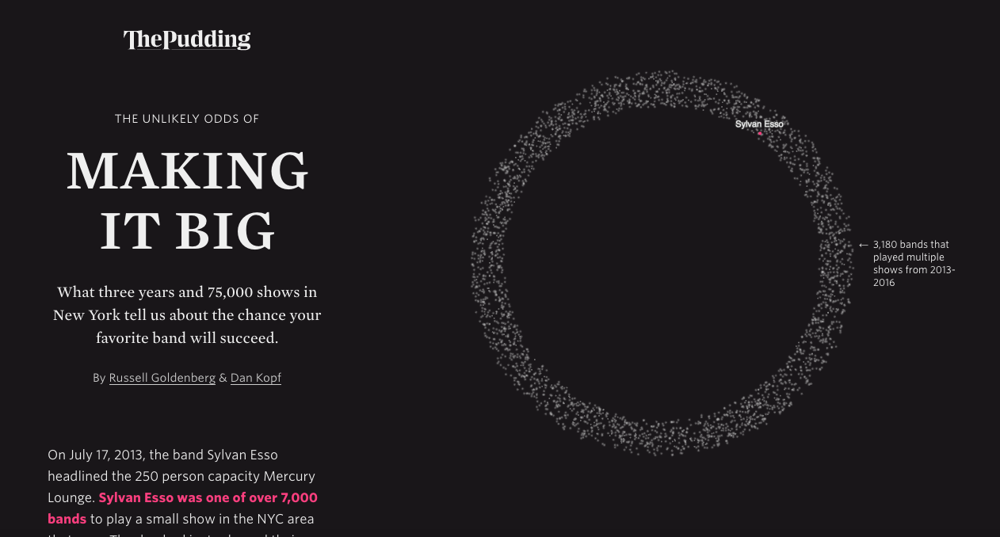
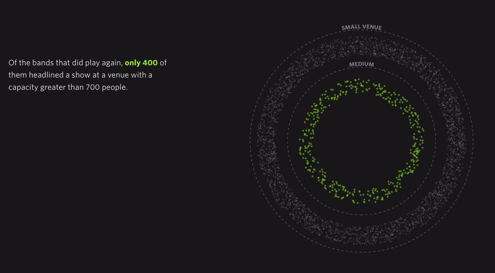
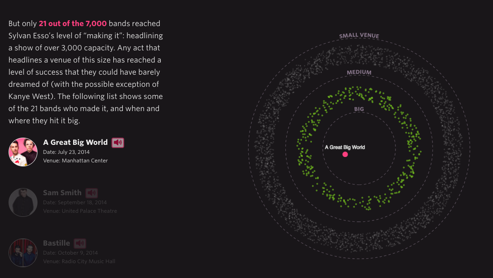
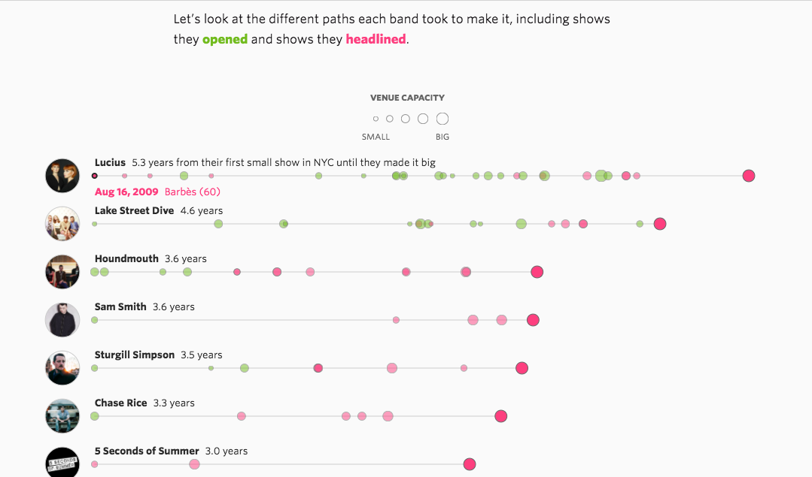
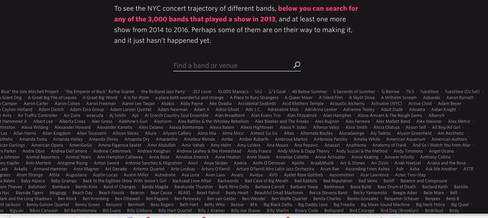

The ''opening act'' of ''The Unlikely Odds of Making it Big'' melds traditional journalism and creative data design, setting the stage for the whole visual essay's integrative approach. The essay begins with a standard anecdotal lede about a band called Sylvan Esso playing at a small New York City venue in 2013 (supplemented with links to songs to add an extra dimension). To the right is an attention-grabbing rotating circle, filled with 3180 swarming dots.
These dots represent all the bands that played a small venue more than once in the NYC area from 2013 - 2016. Positioned in this rotating musical universe, Sylvan Esso is marked with a dot color-coded pink, the same color as the related reference in the text. Focusing on a particular band effectively gives us a relatable point of entry to the image just as the anecdotal lede brings us into the story, whose larger theme is the odds of success for bands in New York.
As we press the arrow down to read on in the text, the text scrolls down while the circle image stays in place so we do not lose sight of it. We are invited to click on a rough YouTube video made by an audience member who watched Sylvan Esso perform a few years after the small venue appearance, this time at a huge venue; it offers a grungy, visceral snapshot of what ''making it big'' (playing at a 3000 +venue) means. What were the odds, the essay asks, that Sylvan Esso would have made it to that point? One can imagine that the people most interested in this visual essay are not unlike the audience member who shot that video: fans of the local NYC music scene, with favorite bands they hope will succeed.
As we read further, we learn that only 400 of the 7000 bands that played a small venue in 2013 went on to play at a medium-size venue; in an excellent animated move, a new moving smaller circular band comprised of 400 dots, marked ''MEDIUM,'' starts circling within the larger ''SMALL VENUE'' circle. We see the relative numbers of bands easily, and intuitively understand the bullseye structure: the closer to the center, the better off the band and the closer to ''making it.'' Color is again effectively used to link text with image: the green “only 400” in the text links with the 400 green dots in the image.
Finally, as we continue further down the page, new red points dramatically fly into the center of the circle, labelled ''BIG'' to indicate the largest venues. According to Graphical Integrity, the ''special power of graphics is in the display of datasets with over 20 data points.'' As if aware of this magic number, now that we are focusing on what turns out to be just 21 successful bands, most of their names appear, in red (others are listed right afterwards). These successful bands are honored with a link to their music and CD covers that become brightly lit in sync with when their dot flies in, dramatically adding additional graphic interest. And again, the use of sound brings this topic to life.
The advantage of the time lapse bullseye structure is that it captures the time element involved for these bands, while also effectively visualizing just how small 21 is compared to 3000. Now the essay’s ''first act'' is over: a new section is clearly signaled with inverted colors (black print on white background), titled ''HOW LONG IT TAKES TO MAKE IT.'' The authors want to focus deeper now into the time element, which seems to be their main interest in terms of the data. Again the authors uses a clean, intuitive layout in the next visualization: a series of staggered timelines of varying length for each successful band, arranged in order of how many years until it played a large venue. The red and green color scheme from earlier is carried through for coherence and style: red circles indicate when the band headlined, green when they opened; the bigger the circle the bigger the venue. Lucius at the top took 5.3 years, whereas Sylvan Esso on the bottom took only 3.0 years.
While the graphic is well-designed and elegant, here the text stumbles. Again the authors focus on a particular band: ''The long journey to popular success of the indie pop band Lucius is more typical [than Sylvan Esso’s]. The Brooklyn based band played 24 small to medium sized shows in New York from 2009 to 2014, before headlining Terminal Five in December 2014.'' However, to call Lucius more typical than Sylvan Esso is clearly not accurate; as we quickly see from the graphic, Lucius took longer than any other band. They are as much an outlier as Sylvan Esso, which took the least amount of time. (There is no calculation of mean or median, but a quick visual survey indicates that the median is probably about 3 years.)
The final, third section ''EVERYBODY ELSE'' is an interactive compendium of the 3,000 bands that played a show in 2013, and at least one more show from 2014 to 2016. It is searchable by venue or band name. This interactive element expands the life and usefulness of the essay, since readers can check out their favorite bands. But the information here is not particularly rich: it is just limited to the names of the venues and performance dates, and there are no links to music or YouTube videos.
In terms of design and narrative flow, and conveying the information depicted, the piece is very successful. The color scheme is dramatic and coherent, and supports the data well. The writing is clear and succinct, and moves logically from point to point, carrying the reader along effortlessly. And what stands out even more is the effective melding of animated visual elements with the narrative: they work together seamlessly, hand in hand. Apart from the point mentioned above, the essay’s limitations lie relate to definitions, analysis and depth. Some of these are just a matter of choice and scope, and some are real limitations.
In terms of the data analysis, the definition of ''making it big'' is NY-centric in a way that may skew the conclusions from the data. A country band that is big in Nashville may not attract a big crowd in NY, and thus be considered to have not ''made it big.'' While the audience of the site may well be New Yorkers who are not as interested in other bands outside of NY, it might have added richness to incorporate the origins of the bands, whether local to New York or otherwise, and also whether American or foreign. From the second graphic about the how long it took the successful bands to ''make it'', we see that some bands never opened for others, and other bands seem to play rarely, indicating they are probably devoting their energies places other than New York. Greater context and perhaps supplemental data analysis would help explain these differences and put them in perspective.
The piece might also have reflected more on the financial realities that lurk beneath their venue-size defined definition of ''making it big''. Given the current huge pressure on record sales, it is true that a lot of bands make more of their money now from touring, so venue size is an indicator of success. However, because of the difficult current financial realities of the music industry today, bands who have played large venues can even be essentially homeless if they don’t have a second job, as explained in this 2016 article from ''The Guardian.''> There are aslo some errors that result from this venue-based methodology: 10,000 Maniacs is listed in the ''EVERYBODY ELSE'' section even though they are one of the world’s most successful bands. Apparently they chose to only play a couple of small venues in NY years after their heyday.
In any case, the piece is really about the rarity of playing a large NY venue during a certain time period, rather than about what the authors call the ''odds'' of success. The latter would have been an analytically richer work, though that is apparently beyond the ambitions of this piece. A real analysis of the odds of success would start by considering the number of venues of different sizes, and how many acts they book per year. It would also try to model the factors that influence success. This visual essay does not tell you the probability of success going forward, nor draw any conclusions about the successful bands, nor analyze the causes of success. Are certain genres more likely to be successful? How much do the looks or charisma of the lead singer matter versus songwriting prowess or marketing? What about the role of social media? How do the numbers change over different time periods? Does the name of the band matter? One might imagine exploring these questions and many more were one really interested in the odds of success, or in embracing the complexity behind success. What the current analysis does is give us a series of snapshots to convey the rarity (rather than odds) of success in a certain time period, which might or might not have been atypical. It is interesting and engaging, and fun for the NY band fan, though not especially analytically deep.
In ''Data Humanism: The Revolutionary Future of Data Visualization,'' Giorgi Lupi, by contrast, recommends embracing complexity in the new digital age of design. She argues that clarity should not necessarily be immediately apparent until one delves into the graphics. In ''The Odds of Making It Big'' the interpretations and data are easily grasped-clarity is in fact one of the strengths here. It is through multiple visualizations embedded in a narrative that the authors weave in as much complexity as they include. Complexity is thus spread out rather than all compressed, as it is in Lupi's work, into one multilayer graphic design that has cleverly integrated various elements and must be decoded. Her approach is to pack the complexity into one design, and to reward the diligent reader; the Pudding spoonfeeds the data which unfolds through storytelling. These different approaches to complexity probably are a function of the differing backgrounds of the creators: The Pudding consists of so-called journalist engineers, whereas Lupi is a trained designer.
The advantage of the storytelling approach used in ''Making it Big'' is it can help combat the danger outlined in ''The Death of Interactivity,'' where complexity is wasted because no one clicks to the next level to even see the complexity. ''Making It Big,'' takes you step-by-step through different views of the data without requiring you to click on anything, and with a narrative that carries you along with ease. Were this a more powerful analytical essay, it would involve sliders and inputs that allow us to see relationships of real probabilities over time, and the effects of various factors on the odds. Instead it is an elegant essay that makes its point clearly and in an entertaining way, making the most of the time element inherent in their chosen focus. The piece offers a slice of data iin a way that does shed light on the competiveness of the NY band landscape, though it does not dig deep into the questions that the topic and the data itself implicitly raise. Simplicity, narrative and otherwise, is embraced here, not complexity. But there's not questioning the visual verve and efficiency of the designs, and the sheer fun and beauty of this sleek visual essay.